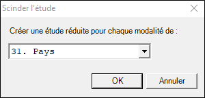

FAIRE UN CHANGEMENT D’UNITÉ STATISTIQUE
Faire un changement d’unité statistique consiste à regrouper les observations ayant le même identifiant (variable clé), ou à diviser l’étude en plusieurs sous-enquêtes ou à éclater les observations (pour une partie, cela crée plusieurs observations pour chaque observation d’origine).
Il est parfois nécessaire de regrouper plusieurs observations qui concernent un même individu. Cette notion est fréquemment utilisée lors d’analyse 360° dans le domaine des ressources humaines. Le principe est le suivant : une personne est évaluée sur un certain nombre de compétences professionnelles par son supérieur et également par ses collègues. Par ailleurs, il peut lui-même être amené à s’auto-évaluer. Ce type d’étude, une fois déployé en entreprise, crée une série d’observations portant sur un groupe de collaborateurs jugés plusieurs fois sur les mêmes critères.
À partir de cette base de données, et pour certaines analyses, on va souhaiter regrouper les évaluations d’un même individu pour ne travailler par exemple, que sur la moyenne qu’il a obtenue sur chaque compétence, calculée sur la totalité des questionnaires le concernant (son supérieur, ses collègues). On va donc passer de la table des évaluations à la table des personnes évaluées. Pour ce faire, on va effectuer un changement d'unité statistique en regroupant les observations.
Voici un exemple des données collectées dans le cadre d’une enquête Ressources Humaines :

Nous pouvons voir que MARTIN Paul par exemple a été évalué 4 fois : par son supérieur, par 2 collaborateurs, et par un pair. Nous observons donc 4 lignes dans le tableur. Hors nous souhaitons regrouper ces 4 évaluations en une seule et même ligne : ne plus raisonner au niveau de chaque évaluation faite, mais au niveau de l’évaluation globale de cette personne (et ce pour toutes les personnes évaluées dans la base de données).
Pour ce faire nous devons mettre en place un changement d’unité statistique en regroupant :
-
Cliquez sur le bouton Regrouper de l’onglet Données.
-
Choisissez les traitements à appliquer pour chaque variable (Ignorer, conserver, fusionner ou calculer).
Dans notre exemple, la variable clé correspond aux personnes évaluées (on veut regrouper toutes les évaluations en une seule). Nous avons choisi de conserver toutes les données en les fusionnant. Par ailleurs, nous calculons la moyenne de toutes les évaluations faites pour chaque individu évalué.
-
Cliquez sur OK pour valider vos choix.

Une autre enquête va être créée : celle du regroupement. Vous devez l’enregistrer et elle s’ouvrira automatiquement.
Dans l’enquête ‘regroupement’, figurent dans le tableur les données suivantes :

Nous pouvons constater que nous avons désormais une seule évaluation (une ligne dans le tableur) pour MARTIN Paul par exemple. La colonne ‘Evaluateur’ liste tous les évaluateurs de cette personne. Il est donc possible maintenant de porter nos analyses sur chaque personne évaluée (par exemple, en partant de la note moyenne que nous avons calculée).
Parfois, sur un seul individu ou un seul foyer, on va réaliser plusieurs mesures identiques. On va demander par exemple à un consommateur d’évaluer une série de produits sur les mêmes critères. Dans un foyer, on va enregistrer des informations identiques (âge, sexe, classe, etc.) sur plusieurs enfants. On aura ainsi un questionnaire avec tout d’abord une première série de questions concernant les produits pour bébé, puis plusieurs parties (trois dans notre exemple), où l’on pose les mêmes questions, pour d’autres types de produits.
Si l’on veut obtenir certains résultats comme le nombre moyen d’enfants par foyer, la distribution des différentes catégories socio-professionnelles ou encore la répartition géographique des familles interrogées, l’unité statistique sera bien le foyer.
Mais si ensuite, on souhaite connaître les marques les plus achetées ou la répartition des types de produits par foyer, on ne raisonne plus au niveau du foyer mais bien à celui du produit. Il va donc falloir modifier la structure de la base de réponses et opérer un « changement d’unité statistique ».
Pour ce faire :
-
Cliquez sur le bouton Eclater de l’onglet Données.
-
Choisissez la méthode à utiliser pour éclater vos observations :
-
Les parties : Éclater les observations d'origine en fonction des parties du questionnaire (ces parties portent sur une même liste de questions).
-
Les valeurs de la question multiple : Éclater les observations d'origine selon le nombre de réponses à une question multiple.
-
Les valeurs de la question numérique : Éclater les observations d'origine selon la valeur de la réponse à la question numérique.
EXEMPLE : Dans notre exemple, nous allons éclater les observations selon les parties : nous voulons réfléchir non plus par foyer mais par produit. On sélectionne donc les parties à traiter (celles-ci doivent être construites de la même manière).
-
(Facultatif) Cochez Ignorer les questions en dehors de ces parties si vous souhaitez ignorer les questions qui se trouvent dans les parties non sélectionnées.
-
-
Cliquez sur Terminer pour valider vos choix.
-
Enregistrez l'enquête (il vous sera alors demandé si vous souhaitez ouvrir l’enquête créée).


Pour diviser une étude en plusieurs sous-enquêtes, procédez comme suit :
-
Cliquez sur le bouton Diviser de l’onglet Données.
-
Choisissez la variable qui permettra de créer une enquête réduite pour chacune de ses modalités.
EXEMPLE :
Dans notre exemple nous souhaitons obtenir une sous enquête pour chaque modalité de la variable Pays ; ainsi, nous obtenons une enquête France, une enquête Italie, etc…
-
Cliquez sur OK.
-
Choisissez le répertoire où seront sauvegardées les enquêtes divisées.
-
Cliquez sur OK pour valider et fermer l'assistant.